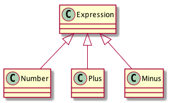

Module 8: Type classes
Implicits (reminder)
Different definitions of add:
def add1(a: Int, b: Int) = a + b
// curried
def add2(a: Int)(b: Int) = a + b
// Last parameter list can have implicit values
// pulled from scope
def add3(a: Int)(implicit b: Int) = a + b
// *If* an implicit Int value is in scope...
implicit val one: Int = 1
// Second argument provided implicitly
def addOne(a: Int) = add3(a)
Context bound syntax
Ordering[T] from the Scala Standard Library.
import scala.math.Ordering.Implicits._
// Typeclass constraint
def myMax[T : Ordering](x: T, y: T): T =
if (x > y) x else y
// Equivalent to
def myMax[T](x: T, y: T)(implicit ev: Ordering[T]): T =
if (x > y) x else y
Example
Let’s say we have the following:

with the following encoding:
sealed trait Expression
case class Number(value: Int) extends Expression
case class Plus(lhs: Expression,
rhs: Expression) extends Expression
case class Minus(lhs: Expression,
rhs: Expression) extends Expression
JsonValue ADT definition
sealed trait JsonValue
case class JsonObject (entries: Map[String, JsonValue])
extends JsonValue
case class JsonArray (entries: Seq[JsonValue])
extends JsonValue
case class JsonString (value: String)
extends JsonValue
case class JsonNumber (value: BigDecimal)
extends JsonValue
case class JsonBoolean(value: Boolean)
extends JsonValue
case object JsonNull
extends JsonValue
We are defining this because we plan to serialize Expressions to JsonValues.
Serializing Expression to Json
If we use this trait…
trait ConvertibleToJson {
def json: JsonValue
}
… we have to implement json method in every subclass of Expression.
And we have created the following dependency (Unnecessary Coupling!):

Let’s define Json[A] typeclass:
// Using the simplest & uniform typeclass encoding
// from a user's point of view
import simulacrum._
/**
* `A` has an instance of Json[A] if `A` can be converted to
* a JsonValue
*/
@typeclass trait Json[A] {
def json(value: A): JsonValue
}
Goal: EPIC DECOUPLING See Simulacrum.
Possible encoding of Json[Expression]:
object JsonImplicits {
implicit val jsonExpression: Json[Expression] =
new Json[Expression] {
def json(expr: Expression): JsonValue =
expr match {
case Number(value) => // Code Elided
case Plus(lhs, rhs) => // Code Elided
case Minus(lhs, rhs) => // Code Elided
}
}
}
case Number(value)
case Number(value) => JsonNumber(value)
case Plus(lhs, rhs)
case Plus(lhs, rhs) => JsonObject(
Map(
"op" -> JsonString("+"),
"lhs" -> json(lhs),
"rhs" -> json(rhs)
)
)
case Minus(lhs, rhs)
case Minus(lhs, rhs) => JsonObject(
Map(
"op" -> JsonString("-"),
"lhs" -> json(lhs),
"rhs" -> json(rhs)
)
)
Typeclass usage
(Assuming implementation uses simulacrum)
import JsonImplicits._
import Json.ops._ // Specific to `simulacrum`
object TypeclassExample extends App {
val exp1: Expression = Plus(Number(1), Number(2))
// Notice "extension" functionality
// and familiar object.method syntax
val json1: JsonValue = exp1.json
}
Remarks
The Typeclass pattern video could be of great help for a better understanding of some of the material presented here.